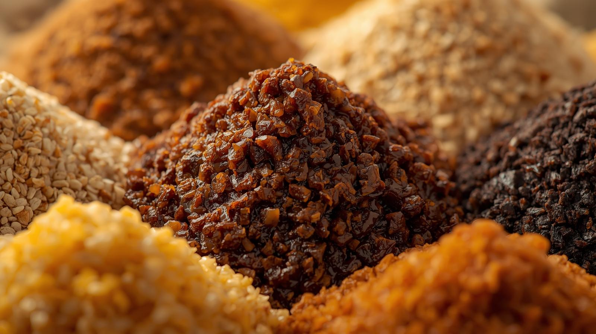

仕込みの工程
味噌作りは、まず前日に**大豆を水につける**ことから始まります。レッスンでは、講師が前もって準備した大豆を使い、すぐに仕込みの作業に入ります。
仕込みの主な工程は、**大豆を潰す**、**麹と塩を混ぜる**、そして**空気を抜きながら容器に詰める**というシンプルな作業です。 それぞれの工程で、おいしい味噌を作るための**重要なコツ**を丁寧にお教えします。
初めての方でも、楽しく、そして力強く作業を進められるようにサポートしますので、ご安心ください。
トップページに戻る